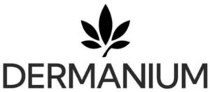

Trade Mark Journal No.2026/012 20 March 2026
WO0000001905809 (3,5,32)
Office of origin: Turkey
Date of International Registration:30 December 2025
Date of designation in the UK:
30 December 2025

International priority date claimed: 16 September 2025
(Turkey)
- Class 3
- Bleaching preparations and cleaning preparations; detergents for household use; laundry bleach; fabric softeners for laundry use; stain removers; dishwashing detergents; cleaning wipes impregnated with cleaning preparations; perfumery; perfumed tissues; colognes; non-medicated cosmetics; cosmetic preparations for personal care; perfumes, including air fragrancing preparations for household purposes; deodorants for human beings and animals; soaps; dental care preparations, namely, toothpastes, denture polishes, tooth whitening preparations, and mouthwashes, all not for medical purposes; abrasive preparations; emery cloth; sandpaper; pumice stone; abrasive pastes; polishing preparations for leather, vinyl, metal and wood, polishes and creams for leather, vinyl, metal and wood, wax for polishing.
- Class 5
- Pharmaceutical preparations; veterinary pharmaceutical preparations; chemical preparations for medical and veterinary purposes; medicated cosmetics; dietetic substances adapted for medical or veterinary use; dietary supplements for humans and animals; vitamins; non-prescription medicines, namely, capsules and liquid drops; dietary food supplements; nutritional supplements; dietary food supplements; food for babies; herbal preparations for medical purposes; medicinal herbal drinks; dental preparations, namely, dental filling materials, dental impression materials, and adhesives for dental prostheses and artificial teeth; sanitary preparations for medical purposes; hygienic preparations for medical use; plasters and materials for dressings; sanitary pads; tampons; medical diapers for children and adults; diapers for pets; disinfectants; antiseptics; medicated soaps; disinfectant soaps; antibacterial hand lotions; medicated wipes impregnated with disinfectant or antibacterial preparations; preparations for destroying vermin; fungicides; herbicides; rodenticides; air purifying preparations; odor neutralizing preparations.
- Class 32
- Beers; mineral and aerated waters; still waters; drinking waters; non-alcoholic beverages; energy drinks; sports drinks; isotonic drinks; protein-enriched sports beverages; vitamin-enriched drinks; electrolyte replacement beverages; non-alcoholic herbal drinks; plant-based beverages; fruit drinks; fruit juices; vegetable juices; smoothies; non-alcoholic fermented beverages; coconut water; flavored waters.
DERMANIUM GIDA VE SAĞLIKLI YAŞAM ÜRÜNLERİ LİMİTED ŞİRKETİ
Representative: MARPİVA PATENT BİLİŞİM LİMİTED ŞİRKETİ, KÖYCEĞİZ MH. KÖYCEĞİZ CD. NO:127/1,, MERAM, KONYA, TURKEY